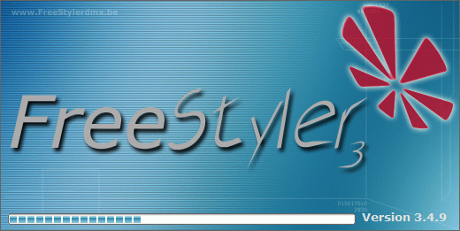

What is FreeStyler.

FreeStyler is a package of programs that are used control light fixture with DMX interface.
It consists of the following programs.
FreeStyler
Fixture Creator
FreeStandalone
Art-Net to DMX
Additional programs created by users.
See the list bellow Additional programs
FreeStyler
FreeStyler is the main program where light can be set, settings recorded and playedback.
This gives the possibility to have live control over the light but also to make pre programmed scenes / settings.
The preprogrammed settings can consist of one or more scenes that can be freely programmed and this gives the possibility to create fixed scenes for theater or dynamic shifting scenes / light that can be used for concerts or disco.
The scenes are saved in sequences which are attached to a cue and the cue is then used to playback the sequences.
An example could be a shifting light (chaser). The lights that are “on” and “off” are set one by one and added to a sequence. Each step in the sequence represent shift in which light that are “on” and which are “off”.
When the sequence is playedback in a cue this gives a shifting light.
FreeStyler has a lot of functionality to make an easy programming of the light and to manipulate the setting so the light behave like wanted even in tricky situations.
Additional it has the possibility to use external control input such as fader panels via midi interface or input from touch screens.
From users there are created aps for remote control with mac or android.
Fixture Creator.
Fixture Creator is a program used to create personalities, here called fixtures, that link FreeStyler functions and the DMX value send to the light fixture together.
An example could be a light fixture that has a red color on color wheel.
The color is controlled on channel 5 with a DMX value 30.
In Fixture Creator this can be configured so the color wheel function is attached to channel 5.
Additional an icon here “red” can be selected and a value, here 30 can be linked together.
This will, when this fixture is used in FreeStyler, give a red icon in the color wheel panel and when the red icon is pressed FreeStyler know that it has to send the value 30 on the fixtures channel 5.
There by the linking.
All fixture control functions in FreeStyler are present and can be configured in Fixture Creator.
Have a look on the wiki. There are plenty examples and information.
Art-Net to DMX
Art-Net to DMX is a small client program that are placed on a remote PC.
The remote PC are connected to the light fixture via a DMX dongle and to the Ethernet.
This setup enables FreeStyler to control the remote PC and there by the light connected to the remote PC via Ethernet.
FreeStandalone.
FreeStandalone is a small program that works with some special DMX interfaces that has a build-in memory. The memory of these interfaces can hold a number of scenes which can be controlled / selected with the “FreeStandalone”.
The scenes are recorded and uploaded to the memory with Sequence Editor.
It is statics scenes which means not a sequence with multiple scenes.
{kind=link}
Additional Programs created by the users.
They can be found here.
http://www.freestylersupport.com/wiki/community_section:community_downloads
1. Freestyler for mac
Wrapper for Mac
2) LuaFS
This is a Tool so that FreeStyler can be controlled with LUA scripts.
3)Telnet
Telnet Server
4) PDA control interface.
PDA Interface that works in conjunction with Telnet Server for remote FreeStyler Operation
5) FS configuration tool
Simple tool that allows editing the freestyler.ini using a graphical user interface
6) Auto Strobe timer
Simple timer for activating a strobe with set intensity and speed.
7) iphone / ipod touch remote.
8)Sound 2 light.
Makes a beat detection on an audio signal whict can be used to control sequences in FreeStyler.
In FreeStyler 3.2 and newer this is included in the program.
9) Easy Freestyler interface
A Simple interface to control the Cuelist buttons.
10) FreeStyler AutoUpdater.
An Autoupdater that looks for new updates if you Start freestyler.
11) Go Monkey
Here is a link :http://www.freestylersupport.com/fsforum/viewtopic.php?f=38&t=2787
12) android app